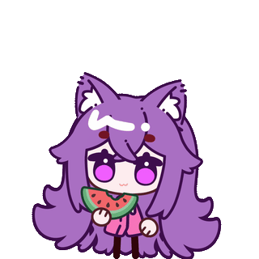
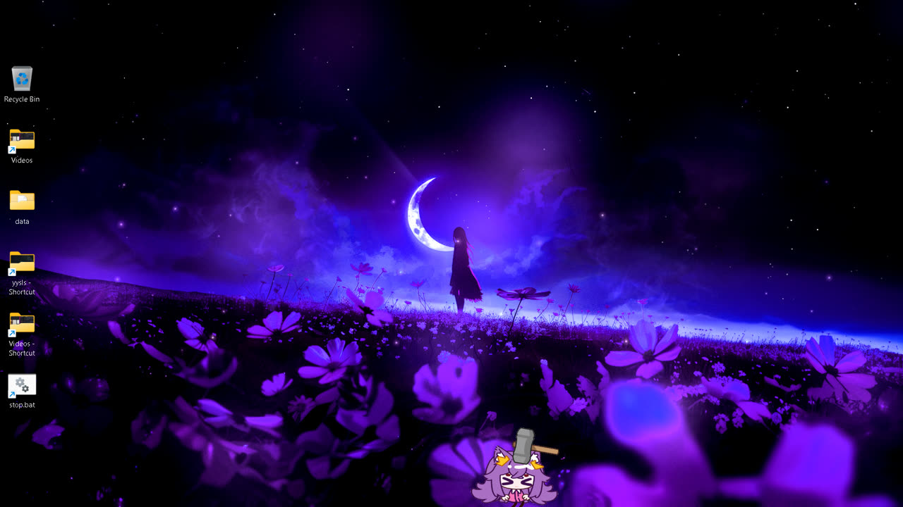
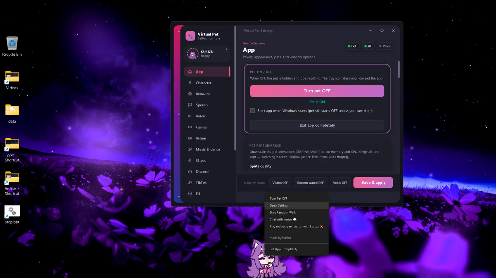
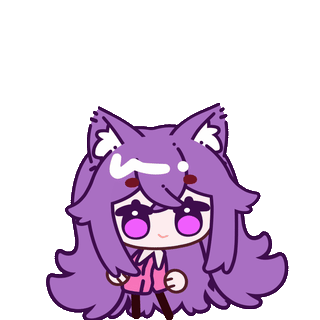

She wanders your screen, chats with AI, watches what you watch, talks back out loud, hangs out in your streams, dances to your music — and sleeps on schedule.
Download full version Compare editionsOne portable .exe, no installer. Your keys stay in a local config file on your PC.


Same gremlin, two sizes. Grab the full brain, or the lean build that skips the bots and heavy extras.
Everything she can do: AI chat & agent mode, screen vision + OCR, voice hearing, VTube Studio, TikTok, Discord bot with a DJ booth, Minecraft bot, pranks and live stats.
The essentials: the pet, customization, her speech, AI chat with her personality, screen vision, VTube Studio and chaos mode. No Discord, Minecraft, OCR or DJ — roughly half the download.
One app, a whole personality. Everything below is already in the build — click any card to see her react.
Wanders, naps, sits, dances, begs for head pats, gets flung with real physics, sulks when slammed into walls, plays tag and rock-paper-scissors, chases your cursor in play mode, and sleeps on a schedule you set.
Talk in the chat window — she remembers facts, moods, and your shared history. Bring your own provider: Ollama local, Gemini direct, or OpenRouter.
Ask her to look at the screen and she describes what she sees — and recognizes herself in it. Auto-looks react to games and app switches. Local or cloud models.
Speaks via VOICEVOX, built-in voice, Edge TTS, or offline Kokoro. No voice? Undertale-style text bleeps + visual-novel typewriter with pop, wave, fade and rainbow effects.
Optional mic listening on your mic only. Say her name — "KURIZU, what time is it?" — and she answers. Transcribed via Gemini, Groq, or fully offline Whisper.
Drives your Live2D model: lip-sync, idle sway, eyes-dart-first gaze tracking, talk wobble, smile-while-jamming to your music, plus hotkeys for talk, victory, defeat, dance and grabs.
Reads TikTok LIVE chat, answers Discord DMs and mentions, DJs music in voice channels (!play, smart !shuffle), and joins Minecraft servers as a real player that follows and chats.
GIF avatar slots for every mood, per-pet characters, speech-bubble themes, multi-pet households that bond, greet, gift and play tag with each other.
Live CPU, RAM and VRAM graphs built in — see exactly what vision, voice and Ollama cost while you game. AMD supported via Windows counters.
Five minutes, no account needed. Tick off each step as you go — your progress is saved.
Run Desktop Gremlin 1.80.0.exe — portable, no install.
Find the pink tray icon by your clock → Settings, or right-click her once she appears.

Press Turn pet ON — she drops onto the bottom of your screen.
Character tab → pick a companion so she's dressed head to toe.
Pick an AI provider below (AI setup) — without one she's cute but quiet.

Settings → Speech tab → AI. Pick exactly one path. Everything else falls back automatically.
Install Ollama, then pull a chat model:
ollama pull llama3.1:8b # balanced ollama pull dolphin3:8b # spicier
Set provider to ollama, model to what you pulled. Nothing leaves your PC.
Get a key at Google AI Studio, paste it as the AI key, endpoint:
https://generativelanguage.googleapis.com/v1beta/openai
Use a model ID your key actually lists — check /v1beta/models?key=YOUR_KEY in a browser. Working picks include gemini-2.5-flash-lite and gemini-3.8-flash. Retired IDs 404 — the list is truth.
Paste an sk-or-… key, endpoint https://openrouter.ai/api/v1. Model IDs need the provider prefix, e.g. google/gemini-2.5-flash — bare IDs 404 here. Buy $10 of credits once to lift free-model limits.
gemini-… IDs. OpenRouter endpoint ↔ prefixed IDs like google/…. Mixing them is the #1 cause of http-404.Settings → Voice tab.
| TTS backend | What it needs |
|---|---|
VOICEVOX app | VOICEVOX running on 127.0.0.1:50021. Japanese voices — English sounds charmingly robotic. |
Built-in | One-time ~180MB voice pack download. No extra app. |
Edge TTS | Online, keyless, cute voices. Needs internet. |
Kokoro | Offline, ~90MB model on first use. |
No voice? She still talks: synth text bleeps (own volume slider), typewriter reveal, and animations — pop, wave, fade, rainbow. Switch live by chatting text anim rainbow, or pick in settings and hit Preview on pet.
Hearing you: tick Listen for my voice, Refresh mics, pick your mic (she captures only that device), choose a transcriber — Gemini (AI key), Groq Whisper (free gsk_… key), or Local Whisper (Xenova/whisper-tiny.en, ~40MB once, offline). Then say her name: "KURIZU, what time is it?" Whisper mangles names, so add what it hears to Also answer to (e.g. Corisoo). The Test mic (4s) button proves the whole chain and tells you your room-noise level.
Settings → Vision tab. Chat look at the screen anytime, or hit Test.
| Mode | Setup |
|---|---|
Local | ollama pull qwen2.5vl:7b (or qwen3-vl:8b-instruct — the plain :8b tag thinks out loud). Free, private, costs VRAM per look. |
Cloud | Same endpoint/key rules as AI setup. gemini-3.8-flash is the current safe pick. No VRAM cost. |
Quality fast keeps captures tiny (good for free-tier token caps); game-looks hype your gameplay on an interval; auto-looks fire on app switches with anti-repeat so she doesn't narrate the same screen twice.
discord.com/developers → app → Bot → Reset Token → turn ON Message Content Intent → invite with bot scope. Paste the token in the Discord tab. She answers DMs and @mentions (plus ! music commands). Channel ID must be a text channel — a voice-channel ID silences her everywhere. Blank = all channels.
In a voice channel: !join, !play <song or link> (Spotify links too), !skip, !pause/!resume, !loop [track|queue|off], smart !shuffle [on|off] (random, no repeats till everything played), !queue, !leave. FFmpeg ships built in; some YouTube videos want your cookie (field in Discord tab).
Put your @username in the TikTok tab — she auto-connects on boot, reads chat, reacts to gifts and follows, and announces trending topics.
She joins Java Edition as a real player: follows you, wanders, wears found armor, sleeps at night, answers chat. LAN/offline servers need just a name; online-mode needs the Microsoft device-code login once.
VTS → Settings → API → Allow Plugin API access, default port 8001. Connect from the VTube tab (approve the popup). You get lip-sync, idle sway, eyes-dart-first gaze tracking, talk wobble, beat-locked dance jam with smile, and hotkeys for talk/victory/defeat/dance/grab — with sensitivity, smoothness and smile sliders.
Behavior tab: a sleep schedule (default 23:00–07:00, chats/grabs/pats snooze it 10 min) and play mode — she chases your cursor and pounces. Or chat play mode on.
| Where | Command | Does |
|---|---|---|
| Chat | look at the screen | She describes your screen (also: what do you see?) |
| Chat | agent mode on / chat mode | Everything becomes a task / back to chatter |
| Chat | play mode on / off | Cursor chase + pounce |
| Chat | text anim wave | Try pop / fade / rainbow / typewriter / off live |
| Chat | rock / guess / games | Mini-games in chat |
| Voice | "KURIZU, …" | Wake word + command, hands-free |
| Discord | !play / !skip / !shuffle / !loop / !queue / !spotify / !leave | DJ booth (plus !pause, !resume, !join) |
fast, space out looks — or go Local / Gemini to dodge it. New models won't help; only credits or a different provider will.gemini-2.5-flash is retired for new users; gemini-3.8-flash is the replacement). Verify IDs against /v1beta/models?key=…. OpenRouter IDs need the google/ prefix.Free download on itch.io — portable exe, then follow Get started ↑
Download on itch.io Setup guide